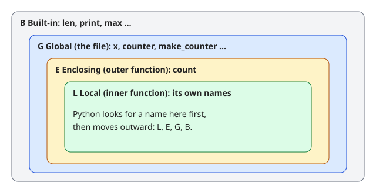
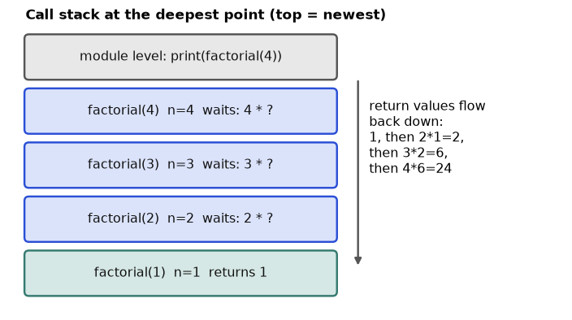

A delivery app does not just handle one order. It loops over many orders, checks conditions, branches when a payment fails, and reuses the same "pack the parcel" step again and again. Python programs work the same way. In this chapter you learn the building blocks that do this: decisions (if, match), repetition (for, while), and reusable steps (functions). You also learn the rules for where a name is visible (scope) and how a function can call itself (recursion). By the end you will write small, correct functions that process a list of results, and you will know the five classic traps: the mutable default, the late-binding closure, UnboundLocalError, modifying a list while looping, and runaway recursion.
Running example. A list of five online-shop orders. Each is a tuple (item, status_code, delivery_minutes), where the status code is what the shop's order system reported:
samples = [("book",200,480),("lamp",200,1250),("phone",500,3100),("book",200,310),("phone",503,60)]A tuple is a fixed group of values in round brackets (Chapter 4 explains it fully). Here, think of each one as a row of an orders file.
if. A roundabout where cars go around again and again until they find their exit is a loop. Control flow means "the order in which lines run, and the questions that change that order".| Word | Meaning |
|---|---|
| Condition | an expression that is true or false, such as code < 300 |
| Block | the indented lines under a :. Python uses indentation (4 spaces) to group code |
| Iterable | something you can loop over: a list, a string, a file, range(...) |
| Iteration | one trip around a loop |
if condition: # runs if true
...
elif other: # tried only if the first was false
...
else: # runs if all were false
...
for item in iterable: # one trip per item
...
while condition: # repeat while true
...break leaves the loop at once. continue skips to the next iteration.else: block. It runs only if the loop ended without break. The name is confusing; read it as "no break happened".range(start, stop, step) gives integers from start up to but not including stop.enumerate(items, start=1) gives (index, item) pairs. zip(a, b) walks two iterables together and stops at the shorter one.match (Python 3.10 and newer) is structural pattern matching: it looks at the shape of a value, not just equality.:= assigns and returns a value inside an expression. Use it sparingly.A if cond else B picks one of two values.Predict: The status codes 500 and 503 are server errors in the order system. Which rows will print server error?
def classify(code):
if code < 300: return "ok"
elif code < 500: return "client error"
else: return "server error"
for item, code, mins in samples:
print(f"{item:<7}{code} {mins:>5} min {classify(code)}")
for i in range(0, 10, 3): print(i, end=" ")
print()
for i, (item, _, _) in enumerate(samples, start=1): print(i, item, end="; ")
print()
print(list(zip([1,2,3],"abc")), list(zip([1,2,3],"ab")))Real output:
book 200 480 min ok
lamp 200 1250 min ok
phone 500 3100 min server error
book 200 310 min ok
phone 503 60 min server error
0 3 6 9
1 book; 2 lamp; 3 phone; 4 book; 5 phone;
[(1, 'a'), (2, 'b'), (3, 'c')] [(1, 'a'), (2, 'b')]Line by line:
for item, code, mins in samples unpacks each tuple (Chapter 1, Section 1.4) into three names.{item:<7} means "left-align in 7 characters", and {mins:>5} means "right-align in 5". Chapter 3 explains f-strings.range(0, 10, 3) gives 0, 3, 6, 9. It stops before 10._ is the usual name for a value you do not care about.zip call stopped after two pairs because "ab" has only two letters.break, loop else, while, continuePredict: Our courier has a budget of 3000 delivery minutes in total. At which order does the running total pass it?
budget = 3000; spent = 0
for item, code, mins in samples:
spent += mins
if spent > budget:
print("over budget at", item); break
else:
print("within budget")
attempts = 0
while True:
attempts += 1
if attempts % 2: continue
if attempts >= 6: break
print("attempts", attempts)Real output:
over budget at phone
attempts 6phone, so break fires and the else block is skipped.while True loop odd numbers hit continue and go back to the top. Even numbers reach the break test. The loop ends at 6.while True with a break inside is a common pattern for "retry until success".match, walrus, ternaryPredict: What does route(5) return?
def route(req):
match req:
case {"method": "GET", "path": "/health"}: return "health"
case {"method": "POST", "path": p} if p.startswith("/pay"): return f"pay:{p}"
case {"method": m}: return f"other {m}"
case _: return "bad"
print(route({"method":"GET","path":"/health"}), route({"method":"POST","path":"/pay/1"}), route({"method":"PUT"}), route(5))
def kind(x):
match x:
case 0: return "zero"
case int() | float(): return "number"
case [a, b]: return f"pair {a},{b}"
case [first, *rest]: return f"list starting {first} (+{len(rest)})"
case str(): return "text"
case _: return "unknown"
print([kind(v) for v in (0, 2.5, [1,2], [1,2,3,4], "hi", None)])
data = [480, 1250, 3100]
if (n := len(data)) > 2: print("many samples:", n)
import re
line = "ERROR code=503"
if m := re.search(r"code=(\d+)", line): print(int(m.group(1)))
x = 500
print("slow" if x > 400 else "fast", 200 <= x < 600)Real output:
health pay:/pay/1 other PUT bad
['zero', 'number', 'pair 1,2', 'list starting 1 (+3)', 'text', 'unknown']
many samples: 3
503
slow Truematch tries each case from the top. A case can match a dictionary shape ({"method": m} captures the value into m), a type (int()), a list shape ([a, b], [first, *rest]), and can have an if guard. case _ is the "anything else" default.case 0 is before case int(), so 0 is "zero", not "number". route(5) is "bad" because 5 is not a dict.(n := len(data)) > 2 stores the length in n and tests it in one line. The regex example (Chapter 3) uses := to test "did the search find something?" and name the result at once.200 <= x < 600 means 200 <= x and x < 600. +--------+ yes +------------+
start -->| code<300? |------>| "ok" |
+--------+ +------------+
| no
+--------+ yes +----------------+
| code<500? |----->| "client error" |
+--------+ +----------------+
| no
+---------------+
| "server error"|
+---------------+Each diamond is an if/elif. Only the first yes-branch runs. Lines of code inside a branch are indented under it.
| Concept | Example | Where it appears in the job |
|---|---|---|
if/elif/else | classify a status code | Data validation, alert rules |
for | walk every sample | Processing rows of a file |
while + break | retry an API until it answers | Robust pipelines |
for ... else | "search; if not found, do X" | Lookup logic |
match | route by request shape | Parsers, event handlers |
"fast", "slow") before grouping.for epoch in range(10)), stop early with break when loss stops improving.match on a parsed JSON event).for it in items[:]) or build a new list with a comprehension (Chapter 4). Another one: = (assignment) instead of == (comparison) in a condition. Python reports a SyntaxError, which is a kindness.i leak out of a loop. After for i in range(3): pass, the name i still exists and equals 2. This is legal, but do not depend on it.Check yourself
list(range(2, 8, 2)) give?Answer: [2, 4, 6]. It stops before 8.
else block run?Answer: Only when the loop finished without hitting break.
case 0 be placed before case int()?Answer: match takes the first case that fits. 0 is also an int, so a later case 0 would never be reached.
A function is a named, reusable block of code. You define it with def, and you call it with brackets.
values). Argument: the real value you pass in the call ([1,2,3]).ndigits=1).def mean(values, ndigits=2). The caller may leave it out.*args collects extra positional arguments into a tuple. **kwargs collects extra keyword arguments into a dict. At a call site *list and **dict do the reverse: they spread values out./ in the parameter list means "everything before me is positional-only". A * means "everything after me is keyword-only".return returns None.old: float) are labels for humans and tools. Python does not enforce them at run time (Chapter 9).lambda p: p[1].Predict: What happens with mean(ndigits=1, values=[1,2])? And with f(1,2,3,4)?
def mean(values, ndigits=2):
return round(sum(values)/len(values), ndigits)
print(mean([480,1250,3100]), mean([480,1250,3100], 0), mean(ndigits=1, values=[1,2]))
def f(a, b, /, c, *, d): return (a,b,c,d)
print(f(1,2,3,d=4), f(1,2,c=3,d=4))
for bad in ("f(1,2,3,4)", "f(a=1,b=2,c=3,d=4)", "mean()"):
try: eval(bad)
except TypeError as e: print("TypeError:", e)
def stats(*args, **kwargs):
return args, kwargs
print(stats(1, 2, unit="ms", n=3))
nums = [3, 1, 2]; opts = {"ndigits": 1}
print(mean(nums, **opts), max(*nums))Real output:
1610.0 1610.0 1.5
(1, 2, 3, 4) (1, 2, 3, 4)
TypeError: f() takes 3 positional arguments but 4 were given
TypeError: f() got some positional-only arguments passed as keyword arguments: 'a, b'
TypeError: mean() missing 1 required positional argument: 'values'
((1, 2), {'unit': 'ms', 'n': 3})
2.0 3ndigits=0, round still returns a float (1610.0).f, a and b can only be given by position, and d can only be given by name. The error messages tell you exactly which rule you broke.mean(nums, **opts) spreads the dict into ndigits=1. max(*nums) spreads the list into max(3, 1, 2).Predict: What do three calls to add_sample print?
def add_sample(x, bucket=[]):
bucket.append(x); return bucket
print(add_sample(1), add_sample(2), add_sample(3))
def add_sample2(x, bucket=None):
if bucket is None: bucket = []
bucket.append(x); return bucket
print(add_sample2(1), add_sample2(2))
print(add_sample.__defaults__)Real output:
[1, 2, 3] [1, 2, 3] [1, 2, 3]
[1] [2]
([1, 2, 3],)Why: the default value is built once, when def runs, not each time you call. So all calls share one list (Chapter 1: mutable objects shared by reference). All three prints show the same list, which ended as [1, 2, 3]. The fix is to use None as the default and build a fresh list inside. The last line proves the list lives in add_sample.__defaults__.
pairs = [("book", 480), ("phone", 3100), ("lamp", 1250)]
print(sorted(pairs, key=lambda p: p[1], reverse=True))
print(list(map(lambda p: p[1]/1000, pairs)), list(filter(lambda p: p[1] > 1000, pairs)))
def minmax(v): return min(v), max(v)
lo, hi = minmax([5,2,9]); print(lo, hi)
def nothing(): pass
print(nothing())
def pct(old: float, new: float) -> float:
"""Percent improvement from old to new."""
return (old - new) / old * 100
print(pct(480, 360), pct.__doc__)
print(pct.__annotations__)Real output:
[('phone', 3100), ('lamp', 1250), ('book', 480)]
[0.48, 3.1, 1.25] [('phone', 3100), ('lamp', 1250)]
2 9
None
25.0 Percent improvement from old to new.
{'old': <class 'float'>, 'new': <class 'float'>, 'return': <class 'float'>}key= tells sorted what to compare. lambda p: p[1] means "take the second item of each pair" (the minutes).map applies a function to each item, filter keeps items for which the function is true. Both return lazy iterators, so we wrap them in list(...) (Chapter 7).pct(480, 360) is (480-360)/480*100 = 25.0, the same improvement formula we used in the style guide. Check: 480 * 0.75 = 360.Problem 2.2.1 Write a function slow_share(samples, limit) that returns the percentage of samples whose delivery time is above limit. Use our five samples and limit 1000.
| Step 1 | Count samples above the limit: 1250 and 3100 are above 1000. The others (480, 310, 60) are not. Count = 2. |
|---|---|
| Step 2 | Divide by the total number of samples: 2 / 5 = 0.4. |
| Step 3 | Multiply by 100: 40.0. |
| Answer | 40% of the samples were slower than 1000 minutes (a late delivery in this example). |
| Check | Code below prints 40.0. |
| Why it matters | "Share of orders delivered later than the promised time" is a standard service KPI for any shop. |
def slow_share(samples, limit):
slow = [mins for _, _, mins in samples if mins > limit]
return len(slow) / len(samples) * 100
print(slow_share(samples, 1000))40.0def mean(values, ndigits=2): call: mean([1,2], ndigits=1)
^ ^ ^ ^
parameter parameter+default argument argument by name
caller ----- arguments ----> [ function body ] ----- return value ----> caller| Concept | Example | Where it appears in the job |
|---|---|---|
| Default argument | read_csv(path, sep=",") | Library functions you will call daily |
**kwargs | pass options through to another function | Wrapper functions, decorators (Chapter 7) |
lambda as key= | sort rows by one column | Quick data ordering |
| Keyword-only | train(model, *, epochs=10) | APIs that must stay readable |
clean_amount(text) used on every row.train(model, data, *, lr=0.01, epochs=10) with keyword-only hyper-parameters.late_share(orders, limit) helper reused across every weekly delivery report.def f(x, bucket=[])). Never use [], {} or set() as a default. Use None and create the object inside. Another: forgetting return and then wondering why you got None.Check yourself
args and kwargs inside def g(*args, **kwargs) when called as g(1, a=2)?Answer: args = (1,) and kwargs = {"a": 2}.
return?Answer: None.
def f(items=[]):?Answer: The default list is created once and shared by all calls, so data leaks between calls.
global / nonlocalWhen Python sees a name it searches four places in order:
len and print.The first match wins. Assigning to a name inside a function makes it local for the whole function. To change an outer name you must declare global name (module level) or nonlocal name (enclosing function).
A closure is an inner function that remembers variables from the function that created it, even after the outer function has finished. Think of it as a function that carries a small backpack.
Predict: broken() reads counter and then assigns it. Does it print the global value?
x = "global"
def show():
x = "local"
return x
print(show(), x)
def broken():
try:
print(counter)
counter = 1
except UnboundLocalError as e: print("UnboundLocalError:", e)
broken()
counter = 0
def inc():
global counter
counter += 1
inc(); inc(); print(counter)Real output:
local global
UnboundLocalError: cannot access local variable 'counter' where it is not associated with a value
2show creates its own local x; the global x is untouched.broken, the later line counter = 1 makes counter local for the entire function. The print(counter) above it then reads a local name that has no value yet. That is the error. Python decides locality when it compiles the function, not line by line.inc says global counter, so counter += 1 changes the module-level variable. Use global rarely. A function that returns a value is easier to test.nonlocal, and the LEGB orderdef make_counter():
count = 0
def step():
nonlocal count
count += 1
return count
return step
c1 = make_counter(); c2 = make_counter()
print(c1(), c1(), c1(), c2())
print(c1.__closure__[0].cell_contents)
v = "G"
def outer():
v = "E"
def inner():
v = "L"
return v
return inner(), v
print(outer(), v)
def make_limit(limit):
def check(mins): return mins <= limit
return check
within = make_limit(2000)
print(within(1250), within(3100))Real output:
1 2 3 1
3
('L', 'E') G
True Falsec1 and c2 each have their own count. Calling c1 three times gives 1, 2, 3. c2 starts from 1. Each closure owns a separate backpack.c1.__closure__[0].cell_contents shows the backpack: the current count, 3.outer() returned ('L', 'E') and the global stayed 'G': each level has its own v.make_limit(2000) builds a checker that remembers limit = 2000. This is the same pattern decorators use in Chapter 7.partialPredict: What will [f() for f in fns] print for lambda: i created in a loop?
fns = [lambda: i for i in range(3)]
print([f() for f in fns])
fns = [lambda i=i: i for i in range(3)]
print([f() for f in fns])
from functools import partial
def power(base, exp): return base**exp
square = partial(power, exp=2)
print(square(7))Real output:
[2, 2, 2]
[0, 1, 2]
49A closure looks up i when it is called, not when it was created. By then the loop is over and i is 2, so all three give 2. Fix: bind the current value as a default (i=i), or use functools.partial, which stores the argument right now. partial(power, exp=2) is a new function with exp already filled in.

Read the picture from the inside out. The smallest green room is the function you are in. Python searches that room first, then the next larger room, and so on out to the grey room of built-in names. The first room that contains the name wins. The text version shows the same order.
built-in [ len, print, ... ]
global [ x, counter, show ... ]
enclosing [ count ] <- make_counter's local, kept alive
local [ step's own names ]
lookup order: L -> E -> G -> B (inner room first)| Concept | Example | Where it appears in the job |
|---|---|---|
| Closure | make_limit(2000) | Configurable checks, decorators with arguments |
global | a module-level counter | Quick scripts (avoid in real code) |
partial | partial(parse, sep=";") | Passing a pre-configured function to map or a thread pool |
| LEGB | a local max hides the built-in | Debugging "object is not callable" |
partial(train_step, lr=0.01) passed to a runner.i (see 2.3.3). Also: naming a variable list, max or sum at module level, which hides the built-in everywhere below it.Check yourself
Answer: Local, Enclosing, Global, Built-in, the order Python searches names.
Answer: nonlocal.
UnboundLocalError?Answer: The assignment makes the name local for the whole function, so the early read finds a local with no value.
A recursive function needs two parts:
Without a base case, or if the problem does not get smaller, Python stops with RecursionError after about 1000 nested calls (sys.getrecursionlimit()). Each call uses memory on the call stack, the list of calls still waiting for an answer.
Predict: fact(3) is 3 * 2 * 1. In what order do the "->" lines print?
def factorial(n):
if n <= 1: return 1 # base case
return n * factorial(n-1) # recursive case
print(factorial(5), factorial(20))
def trace(n, depth=0):
print(" "*depth + f"fact({n})")
if n <= 1:
print(" "*depth + "-> 1"); return 1
r = n * trace(n-1, depth+1)
print(" "*depth + f"-> {r}"); return r
trace(3)Real output:
120 2432902008176640000
fact(3)
fact(2)
fact(1)
-> 1
-> 2
-> 6The calls go down (3, 2, 1), then the answers come up (1, 2, 6). Hand check: 5! = 5*4*3*2*1 = 120. The result for 3 is 3 * 2 = 6: it waited for fact(2), which waited for fact(1).
Predict: How many function calls does fib_counted(20) make? (Guess before you look.)
import sys
def bad(n): return n * bad(n-1)
try: bad(5)
except RecursionError as e: print("RecursionError:", str(e)[:45])
print(sys.getrecursionlimit())
calls = 0
def fib_counted(n):
global calls; calls += 1
return n if n < 2 else fib_counted(n-1) + fib_counted(n-2)
print(fib_counted(20), calls)
from functools import lru_cache
calls2 = 0
@lru_cache(maxsize=None)
def fib_memo(n):
global calls2; calls2 += 1
return n if n < 2 else fib_memo(n-1) + fib_memo(n-2)
print(fib_memo(20), calls2, fib_memo(90))
def fib_iter(n):
a, b = 0, 1
for _ in range(n): a, b = b, a+b
return a
print(fib_iter(20), fib_iter(90))Real output:
RecursionError: maximum recursion depth exceeded
1000
6765 21891
6765 21 2880067194370816120
6765 2880067194370816120bad never stops (no base case), so Python raises RecursionError.fib(20). The cost roughly doubles for each extra step.@lru_cache (a decorator, Chapter 7) remembers earlier answers. Memoization means "store a result the first time and reuse it". Only 21 calls were needed (for n = 0 to 20). So fib_memo(90) is instant.fib_iter) gives the same answers with no recursion and no stack. When a loop is easy to write, prefer the loop.def flatten(x):
out = []
for item in x:
if isinstance(item, list): out.extend(flatten(item))
else: out.append(item)
return out
print(flatten([1,[2,[3,4]],5,[[6]]]))
def bsearch(a, t, lo=0, hi=None):
if hi is None: hi = len(a)-1
if lo > hi: return -1
mid = (lo+hi)//2
if a[mid] == t: return mid
return bsearch(a, t, mid+1, hi) if a[mid] < t else bsearch(a, t, lo, mid-1)
arr = [2,5,8,12,16,23,38,56]
print(bsearch(arr, 23), bsearch(arr, 7))
def depth_sum(tree):
return tree["mins"] + sum(depth_sum(c) for c in tree.get("steps", []))
recipe_tree = {"mins":50,"steps":[{"mins":120,"steps":[{"mins":30}]},{"mins":200}]}
print(depth_sum(recipe_tree))Real output:
[1, 2, 3, 4, 5, 6]
5 -1
400flatten is natural as recursion because the data is nested to an unknown depth.bsearch (binary search) halves the search range each call. It found 23 at index 5, and 7 is not there (-1).depth_sum adds up a recipe tree. A recipe tree is a dish made of steps, where some steps are themselves made of smaller steps, each with a preparation time. 50 + 120 + 30 + 200 = 400 minutes. Trees and folders are the classic use of recursion.Problem 2.4.1 Count how many calls factorial(5) makes, and the deepest call depth.
| Step 1 | factorial(5) calls factorial(4), which calls 3, then 2, then 1. |
|---|---|
| Step 2 | That is calls for n = 5, 4, 3, 2, 1: five calls. The base case stops at n = 1. |
| Step 3 | The call stack holds all five at the moment factorial(1) runs, so depth is 5. |
| Answer | 5 calls, depth 5. The work grows in a straight line with n. |
| Check | Compare to fib(20) above: 21,891 calls for n = 20. Straight-line recursion is cheap; branching recursion with repeated work is not. |
| Why it matters | Count the calls before you trust a recursive solution on large input. |
fib(4)
+-- fib(3)
| +-- fib(2)
| | +-- fib(1)
| | +-- fib(0)
| +-- fib(1)
+-- fib(2) <- fib(2) is computed AGAIN (wasted work)
+-- fib(1)
+-- fib(0)Each node is one call. The repeated fib(2) is why memoization helps: it remembers fib(2) after the first time.
| Concept | Example | Where it appears in the job |
|---|---|---|
| Recursion on trees | folder walk, JSON of unknown depth | Parsing nested API data |
| Memoization | lru_cache on a slow lookup | Caching repeated calls |
| Divide and conquer | binary search | Interview problems, sorted data |
| Recursion limit | RecursionError on deep data | Choosing a loop or an explicit stack |
factorial(-1) with if n == 0 loops forever). Also, recursing on huge input: Python does not optimise tail calls, so deep recursion fails around 1000 levels. Convert to a loop.Check yourself
Answer: A base case and a recursive case that makes the problem smaller.
fib(40) slow?Answer: It recomputes the same sub-problems an enormous number of times.
@lru_cache do?Answer: It stores results of earlier calls (memoization) so repeated calls return instantly.
Section 2.4 showed recursion working. This section shows what Python does while it works, how to survive when the input is too deep, and one closure trap that catches almost every learner once.
Each time you call a function, Python creates a frame: a small record holding that call's local variables and the line it is on. Frames sit on a call stack, newest on top. When a function returns, its frame is removed and the caller continues. A recursive function stacks one frame per call, so factorial(4) has four frames open at once at the deepest point.

How to read it: start at the bottom, the module that called factorial(4). Each frame above it is a waiting call. Only the top frame (n=1) can finish. When it returns 1, the frame below gets 1 and computes 2 * 1, and so on down to 24.
Problem 2.5.1 Trace factorial(4) by printing when each call starts and ends, with indentation equal to the depth.
| Idea | Pass a depth argument that grows by one per call, and print " " * depth before each message. |
|---|---|
| Going down | Four "enter" lines, each indented more than the last, until the base case n = 1. |
| Coming back | Returns print in reverse order: 2, then 6, then 24. |
def factorial(n, depth=0):
pad = " " * depth
print(f"{pad}enter factorial({n})")
if n == 1:
print(f"{pad}base case, return 1")
return 1
result = n * factorial(n - 1, depth + 1)
print(f"{pad}return {result}")
return result
factorial(4)enter factorial(4)
enter factorial(3)
enter factorial(2)
enter factorial(1)
base case, return 1
return 2
return 6
return 24Python limits the stack to protect your computer. sys.getrecursionlimit() is 1000 by default. Going past it raises RecursionError. For deep data, replace the call stack with your own list used as a stack. The loop below sums a nested list without recursion, and it handles a list nested 5,000 levels deep that would crash a recursive version.
Problem 2.5.2 Measure the limit, then sum a list nested 5,000 deep without recursion.
| Step 1 | Recurse until RecursionError and return the depth reached. It is a little below the limit because some frames are already in use. |
|---|---|
| Step 2 | Keep stack = [nested]. Pop an item. If it is a list, push its children. Otherwise add it to the total. |
| Check | [1, [2, [3, [4]]], 5] sums to 15. The deeply nested list holds only the number 1. |
import sys
def depth(n=0):
try:
return depth(n + 1)
except RecursionError:
return n
print(sys.getrecursionlimit())
d = depth()
print(900 < d <= sys.getrecursionlimit())
def total(nested):
stack, s = [nested], 0
while stack:
item = stack.pop()
if isinstance(item, list):
stack.extend(item)
else:
s += item
return s
deep = 1
for _ in range(5000):
deep = [deep]
print(total(deep), total([1, [2, [3, [4]]], 5]))1000
True
1 15sys.setrecursionlimit(10**6) to "fix" a RecursionError. If the recursion really is too deep, the program can now crash the whole interpreter instead of raising a clean error. Prefer a loop with an explicit stack, or memoisation (section 2.4) so the depth stays small.A closure (section 2.3) remembers a variable, not its value at the time the function was made. That matters in loops. All three lambdas below read the same i, and by the time you call them the loop has finished with i = 2.
Problem 2.5.3 Build three functions that return 0, 1 and 2. Show the broken version, then two fixes. Also show the parameter kinds /, *args, keyword-only and **kw in one signature.
| Broken | [lambda: i for i in range(3)]: every lambda looks up i when called, and finds 2. |
|---|---|
| Fix 1 | A default argument is evaluated once, at definition: lambda i=i: i. |
| Fix 2 | A factory function gives each closure its own i. |
| Signature | Before / the argument is positional-only. After *args, sep is keyword-only. Extra keywords land in kw. |
funcs = [lambda: i for i in range(3)]
print([f() for f in funcs])
fixed = [lambda i=i: i for i in range(3)]
print([f() for f in fixed])
def make(i):
return lambda: i
print([make(i)() for i in range(3)])
def report(first, /, *args, sep="-", **kw):
return first, args, sep, kw
print(report(1, 2, 3, sep="+", unit="kg"))
try:
report(first=1)
except TypeError as e:
print(e)[2, 2, 2]
[0, 1, 2]
[0, 1, 2]
(1, (2, 3), '+', {'unit': 'kg'})
report() missing 1 required positional argument: 'first'if/elif/else decide, for and while repeat, break/continue change the loop, and a loop else runs only when no break happened.match checks the shape of data. Put specific cases before general ones, and end with case _.*args and **kwargs to pass many.None and create inside.nonlocal or global only when you must.i=i) or use partial.lru_cache for repeated sub-problems, or a loop when it is simple.| Pattern | Example |
|---|---|
| Loop with index | for i, x in enumerate(items, start=1): |
| Walk two lists | for a, b in zip(xs, ys): |
Loop else | for ...: ... break / else: not found |
| Pattern match | match v: case [a, b]: ... |
| Safe default | def f(x, bucket=None): bucket = bucket or [] (use is None when [] is valid input) |
| Sort by field | sorted(rows, key=lambda r: r[1]) |
| Fix an argument | partial(power, exp=2) |
| Cache a function | @lru_cache(maxsize=None) |
Problem 2.P.1 (easy) What does this print?
for i in range(3):
if i == 1: continue
print(i)Answer: 0 then 2. When i is 1, continue skips the print.
Problem 2.P.2 (easy) What is list(zip("ab", [10, 20, 30]))?
Answer: [('a', 10), ('b', 20)]. zip stops at the shortest input.
Problem 2.P.3 (what is the output?)
def f(x, y=[]):
y.append(x)
return len(y)
print(f(1), f(2))Answer: 1 2. The default list is shared, so the second call sees two items.
Problem 2.P.4 (what is the output?)
x = 5
def g():
x = x + 1
return x
print(g())Answer: It raises UnboundLocalError. The assignment makes x local, so x + 1 reads a local x that has no value. Fix: pass x as a parameter, or declare global x (not preferred).
Problem 2.P.5 (computation) Use match to return "empty" for [], "one" for a one-item list and "many" otherwise.
Answer:
def size(x):
match x:
case []: return "empty"
case [_]: return "one"
case _: return "many"size([]) is "empty", size([7]) is "one", size([1,2]) is "many".
Problem 2.P.6 (computation) How many times is the base case reached when computing fib(4) recursively? (Base cases are n = 0 and n = 1.)
Answer: 5. The leaves of the tree above are fib(1), fib(0), fib(1), fib(1), fib(0). That is three fib(1) and two fib(0), so 5 leaves.
Problem 2.P.7 (find the bug)
fns = []
for n in [10, 20, 30]:
fns.append(lambda: n * 2)
print([f() for f in fns])Answer: It prints [60, 60, 60] because every lambda reads n when called, after the loop ended with n = 30. Fix: lambda n=n: n * 2 gives [20, 40, 60].
Problem 2.P.8 (find the bug)
def countdown(n):
print(n)
countdown(n - 1)Answer: There is no base case, so it recurses until RecursionError. Add if n < 0: return at the top.
Problem 2.P.9 (scenario) You receive 10,000 delivery times (in minutes) and must report how many are above 2000. A teammate writes a recursive function that processes one item per call. What is wrong and what do you do?
Answer: Recursion depth would reach 10,000, far above the default limit of 1000, so it raises RecursionError. Use a loop or a comprehension: sum(1 for mins in times if mins > 2000).
Problem 2.P.10 (interview) "What is the difference between *args and **kwargs?"
Answer: *args collects extra positional arguments into a tuple. **kwargs collects extra keyword arguments into a dict. They let a function accept any number of inputs, and are used to forward arguments to another function.
Problem 2.P.11 (interview) "Explain Python's scoping rule and when you need nonlocal."
Answer: Python uses LEGB: Local, Enclosing, Global, Built-in. Assignment inside a function creates a local name. If an inner function must rebind a variable owned by an enclosing function, it must declare it nonlocal, otherwise Python creates a new local variable instead.
Problem 2.P.12 (build) Write power(base, exp) recursively using the idea that base**exp equals half * half when exp is even, where half = power(base, exp // 2), and half * half * base when it is odd. Test power(2, 10) and power(3, 5).
def power(base, exp):
if exp == 0:
return 1
half = power(base, exp // 2)
return half * half if exp % 2 == 0 else half * half * base
print(power(2, 10), power(3, 5))1024 243Answer: as shown. The base case is exp == 0. Each call halves exp, so the depth is about log2(exp) (for exp = 10: 10, 5, 2, 1, 0, five calls). That is far shallower than multiplying exp times. Check: 210 = 1024 and 35 = 243.
Problem 2.P.13 (build) The Collatz rule: if n is 1, stop; if even, go to n // 2; if odd, go to 3n + 1. Write collatz_steps(n) that counts the steps to reach 1. What do 6 and 27 give?
def collatz_steps(n, steps=0):
if n == 1:
return steps
return collatz_steps(n // 2 if n % 2 == 0 else 3 * n + 1, steps + 1)
print(collatz_steps(6), collatz_steps(27))8 111Answer: 8 and 111. By hand for 6: 6, 3, 10, 5, 16, 8, 4, 2, 1, which is 8 steps. The recursion depth for 27 is 111, well under the limit of 1000, so this version is safe for small inputs.
Problem 2.P.14 (stretch) Why does a recursive function with a mutable default such as def f(x, acc=[]) that appends to acc give wrong answers on the second top-level call, and what is the fix?
Answer: The default list is created once, when def runs, and is shared by every call. The second top-level call starts with the first call's items. Fix: use acc=None and write if acc is None: acc = [] inside, or put the list in an inner helper function.
Problem 2.P.15 (review, mixes chapters 1 and 2) Without running it, say what prints for fs = [lambda x=k: x * 2 for k in (1, 2, 3)] followed by print([f() for f in fs]), and then say what it prints if you remove =k and write lambda: k * 2.
Answer: With x=k the default captures each value: [2, 4, 6]. Without it, every lambda reads the final k, which is 3: [6, 6, 6] (see Problem 2.5.3).
You are my patient, practical professor. I am a working professional at an Indian company moving into data and AI roles, and English is my second language, so use simple words. Teach me Python control flow: if/elif/else, for, while, break, continue, loop else, enumerate, zip, and match statements. Use one running example of online-shop delivery orders. Explain step by step with short runnable code, ask me to predict each output first, and check my understanding with three questions at the end.
You are my patient, practical professor. I am a working professional moving into data roles, with English as a second language. Topic: Python function arguments (positional, keyword, defaults, *args, **kwargs, keyword-only, positional-only) and the mutable default argument bug. Give me 8 graded exercises from easy to hard with no solutions. When I paste my answers, mark each one and explain every mistake in simple words with a small diagram.
You are my patient, practical professor. I am a working professional moving into data and AI roles, and English is my second language. Explain Python scope (LEGB), closures, global and nonlocal with an analogy and runnable examples. Then quiz me one question at a time, including the late-binding lambda trap and UnboundLocalError. Wait for my answer before giving the next question, and explain the reason for each correct answer.
You are my patient, practical professor. I am a working professional moving into data and AI roles, with English as a second language. Teach recursion from zero: base case, recursive case, call stack, RecursionError, memoization with lru_cache, and when to use a loop instead. Walk through fib(5) by drawing the call tree in text. Then give me 5 recursion exercises on nested lists, trees, and binary search, with hints but no full solutions. Here is my attempt: [PASTE HERE]
You are my patient, practical professor. I am a working professional moving into data and AI roles, and English is my second language. Run a mock Python interview on Chapter 2 topics: default arguments, *args and **kwargs, closures, scope, decorators-lite using closures, recursion limits, and loop else. Ask one question at a time, give a score from 1 to 5, show a model answer, and finish with a short list of topics I should revise.